Our latest Themes
-
ShyFox
Download →A very shy little theme that hides the entire browser interface in the window border
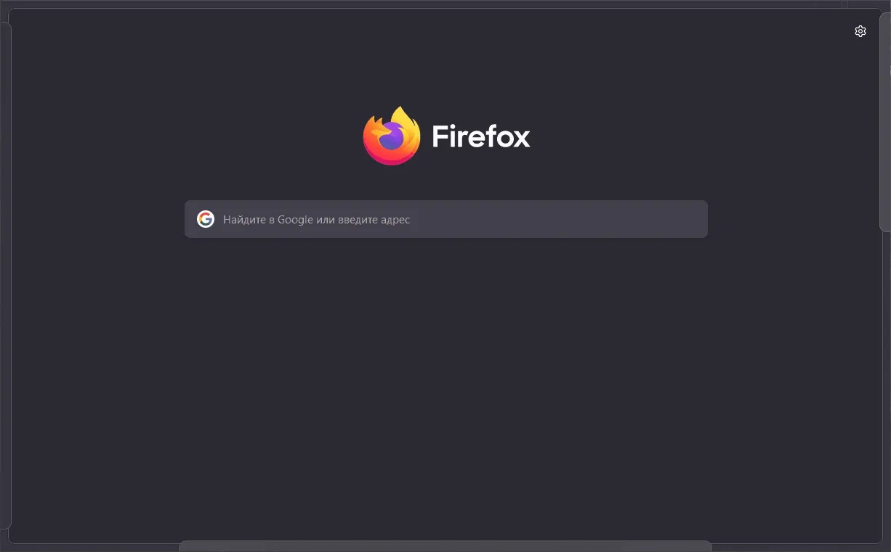 -
Firefox Rounded Theme
Download →Just a Firefox CSS to make it more rounded ;)

-
ArnimFox
Download →A Minimalist Dark Themed Firefox enabling vertical tabs support and modern URL Bar

Community-driven
A collection of Firefox userchrome themes from GitHub and the FirefoxCSS Subreddit made by the community.
Submit your own Theme →Discord
Looking for quick help, feedback or just a nice place to hang out?
Join the FirefoxCSS-Discord →All Themes
-
Shina Fox
Download →A Minimal, Cozy, Vertical Optimized Firefox Theme
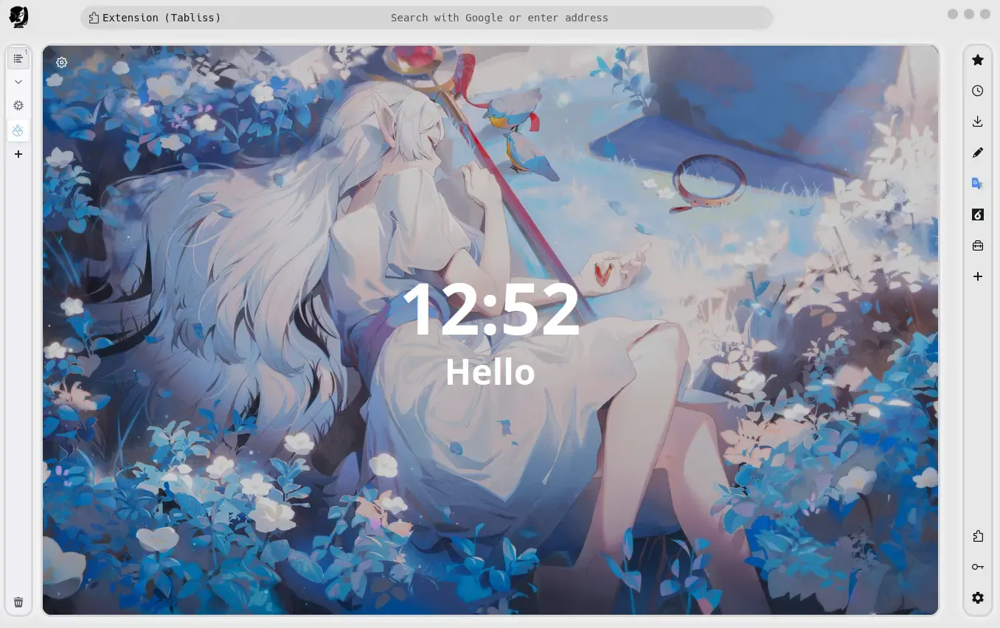 -
Firefox Plus
Download →Firefox Plus, CSS tweaks for Firefox

-
arcadia
Download →Minimal Firefox theme and user.js focused on speed and design
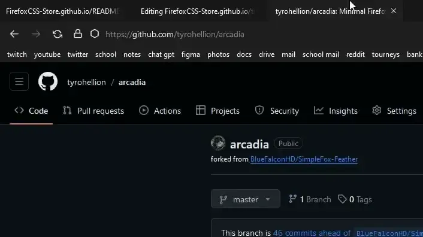 -
SideFox
Download →MS Edge style, sidebar, blur, and more.
-
ImpossibleFox
Download →A simple and fast one-line theme for Firefox inspired by Safari's compact layout.

-
Dark Star
Download →A color-customizable, zero navbar padding skin, modified from Starry Fox

-
Firefox-Alpha
Download →Super clear desktop browser with zero buttons and gesture controls
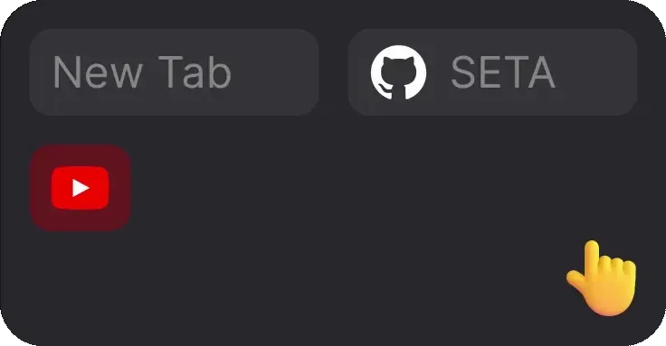 -
Titlebar-Button-Fix
Download →This theme fixes titlebar min max close buttons for Firefox in linux.
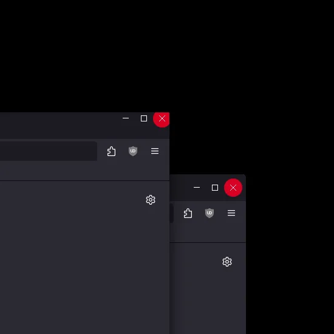 -
RealFire
Download →A minimalist animated oneliner theme for Firefox perfectly matching Real Dark

-
minimal-one-line-firefox
Download →A minimal oneliner, to minimizing the space used for url and tab bar
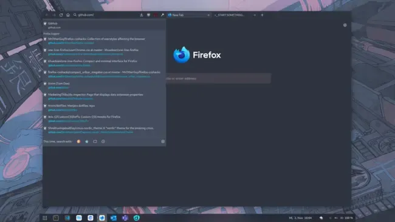 -
Essence
Download →Compact, beautiful and minimalistic theme for the Firefox web browser.

-
Firefox-ONE
Download →Dress Firefox with the Opera One skin

-
zap's cool photon theme
Download →Party like it's Firefox 57-88!

-
Fox11
Download →A Firefox CSS themes with auto-color, Mica, auto-hide nav-bar support. Inspired in firefox-one , Edge/Chrome restyle 2023.

-
DarkMatter
Download →An intensively worked on, and highly customized dark theme made for Firefox Proton, stretching darkness into every corner of the browser and perfecting even the tiniest details
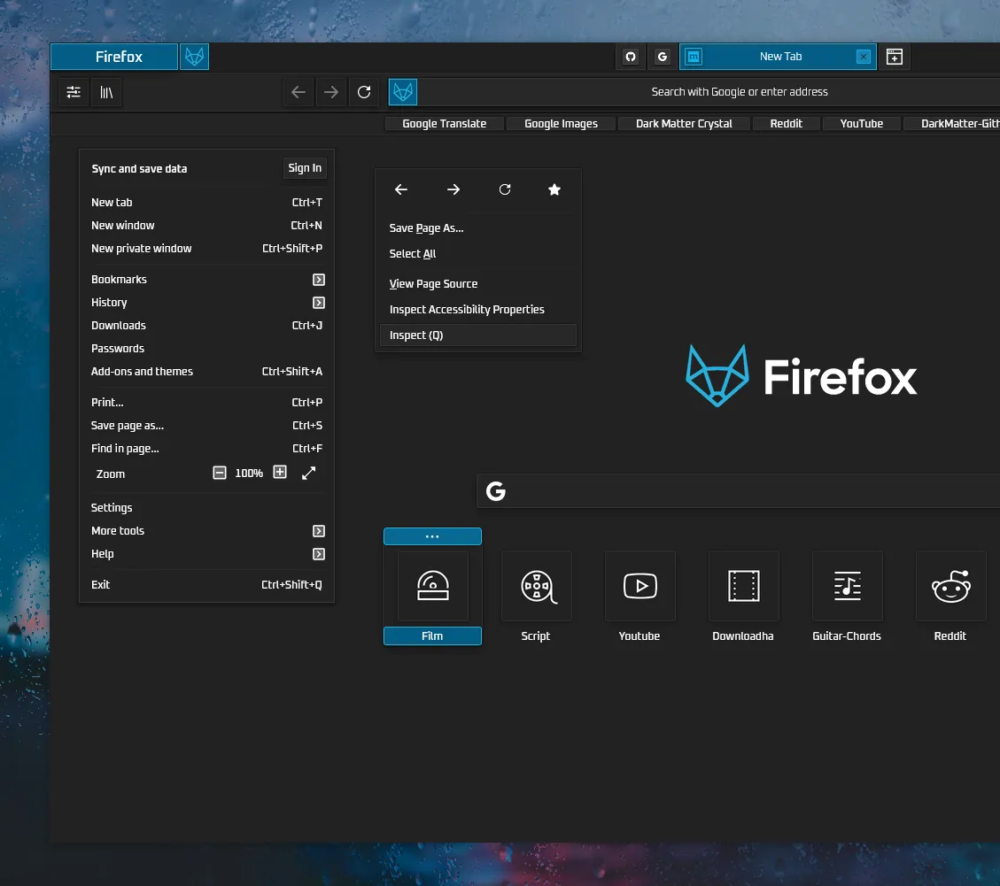 -
ViceFox
Download →Don't ask why it's called 'ViceFox'

-
Bali10050's theme
Download →A minimal looking oneliner, with modular code for easy editing
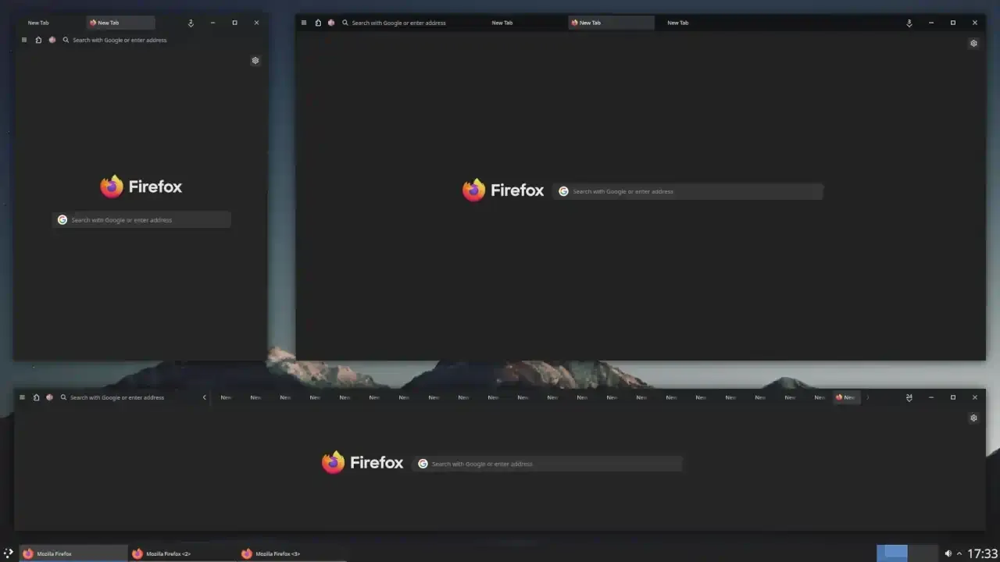 -
Three Rows Simple Compact Clean CSS
Download →A compact theme based on use multiple rows

-
rounded-fox
Download →A minimalist theme that uses animation to hide visual clutter.
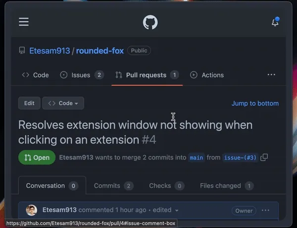 -
Dracula
Download →A Firefox CSS Theme that aims to recreate the look and feel of the Chromium version of Microsoft Edge in the style of Dracula.

-
Firefox Onebar
Download →A single bar for Firefox's UI.
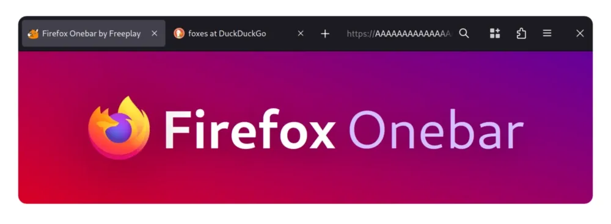 -
Firefox 'Safari 15' Theme
Download →A Firefox theme that emulates the Safari 15 interface and new tab page.
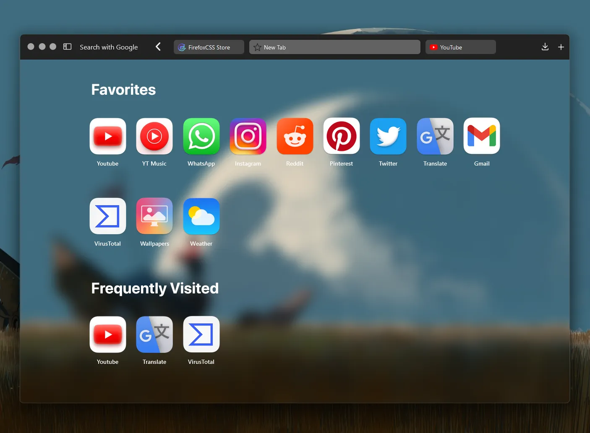 -
AestheticFox
Download →A minamist and aesthetic userstyle theme for Firefox

-
TileFox
Download →A minimalistic Firefox userChrome.css that integrates well with tiling window managers like i3
-
Modoki Firefox
Download →Bringing the classic Modern Modoki Netscape theme back

-
Firefox-UWP-Style-Theme-Omars-Edit
Download →A minimalistic-retro theme based off the UWP interface
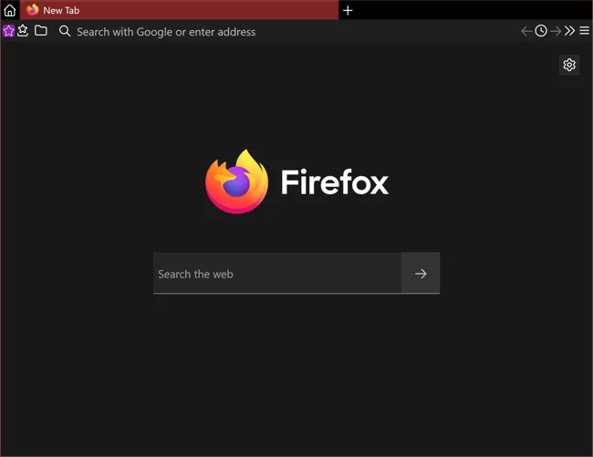 -
gale for Firefox
Download →My CSS files to use with Firefox and Sidebery
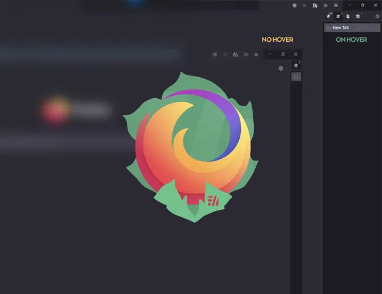 -
SimpleFox Feather Edition
Download →A fork of SimpleFox that uses feather icons!
-
AutoColor-Minimal-Proton
Download →Some settings that together with the vivaldifox add-on create a minimalist theme whose color is the color of the website you are visiting.
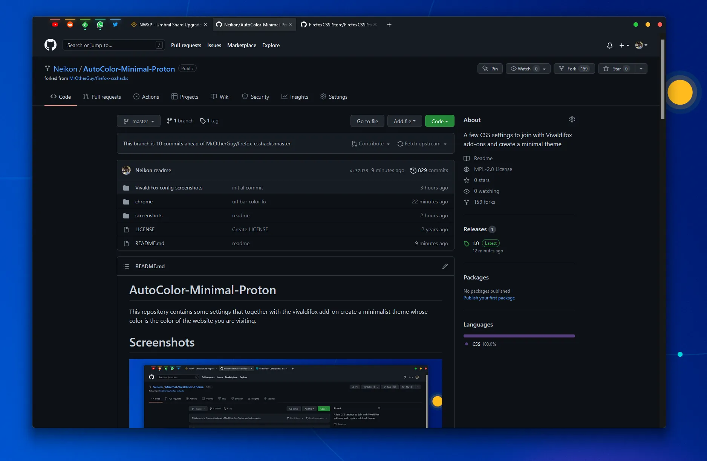 -
TYH Fox
Download →A firefox Theme CSS
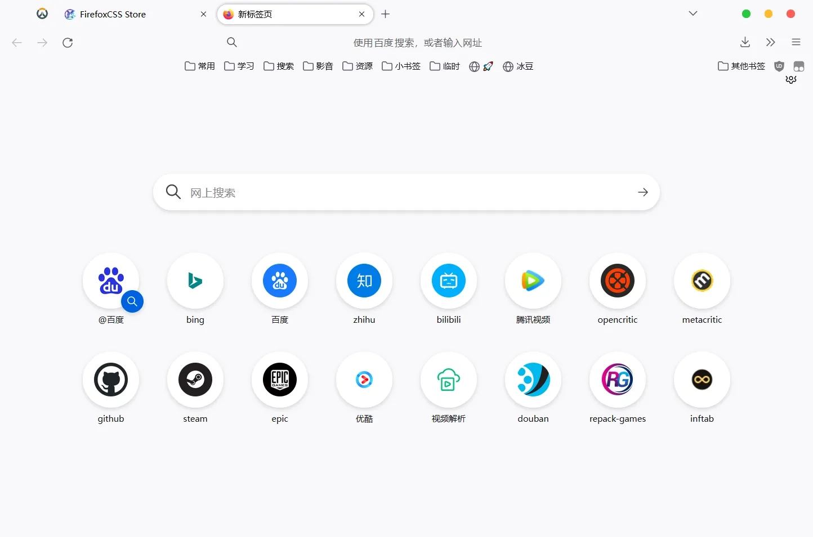 -
Elegant Fox
Download →A firefox context menu theme and background wallpaper support with linux desktops being the main focus

-
Firefox-GX
Download →Firefox Theme to Opera-GX skin Lovers.

-
starry-fox
Download →Firefox CSS stylesheets for the Dark Space Theme. Matching more UI elements with the theme.

-
AuroraFox- Auroral Firefox
Download →AuroraFox is a clean rounded Firefox theme, made using CSS, to match with the trendy 'Aurora' Colour Palette.

-
CompactFox
Download →A simple theme that compacts a lot of the UI elements

-
KeyFox- A minimal, keyboard centered OneLiner CSS.
Download →KeyFox is A simple, minimal OneLiner Keyboard-centered CSS for Firefox.

-
Brave-Fox: The Reimagined Browser, Reimagined
Download →Brave-Fox is a Firefox Theme that brings Brave's design elements into Firefox.
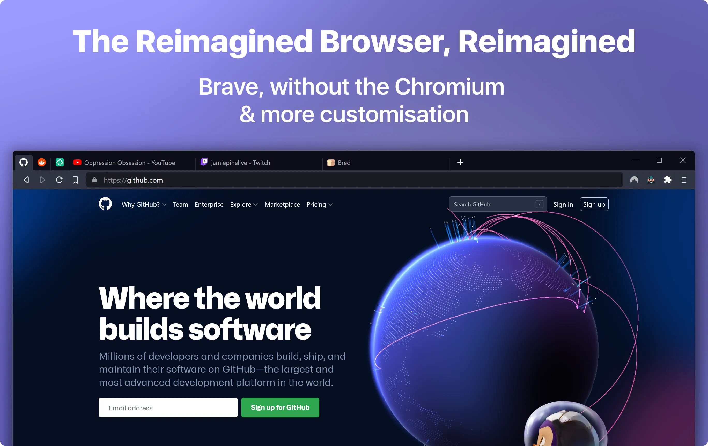 -
Waterfall
Download →A minimalist one line theme

-
Clean and Transparent
Download →Clean theme with as much transparency as Firefox lets you do Compatibility: V91+
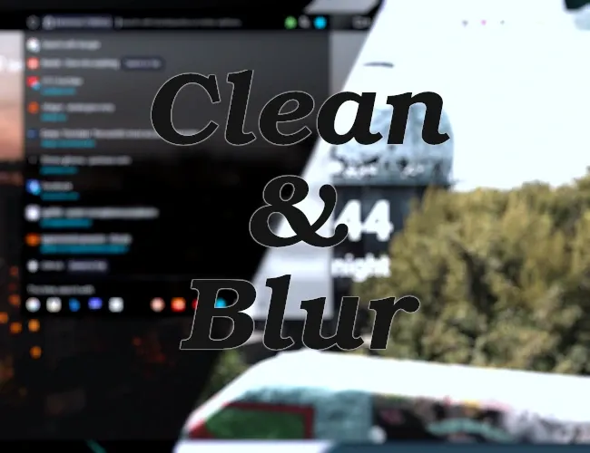 -
GentleFox
Download →A Firefox theme, which features gentle curves, transparency and a minimal interface. Compatibility: V91+

-
Simple Oneliner
Download →A simple theme to maximize the vertical space of your monitor Compatibility: V91+

-
Oneliner Deluxe
Download →Minimal, customizable and theme compatible Compatibility: V91+

-
Elementary OS Odin Firefox theme
Download →This theme supports all the window buttons layouts from Tweaks and it blends into the elementary OS Odin user interface. Compatibility: V91+

-
PretoFox
Download →A Black n White AMOLED theme for Firefox, inspired by the Preto color scheme. Compatibility: V91+
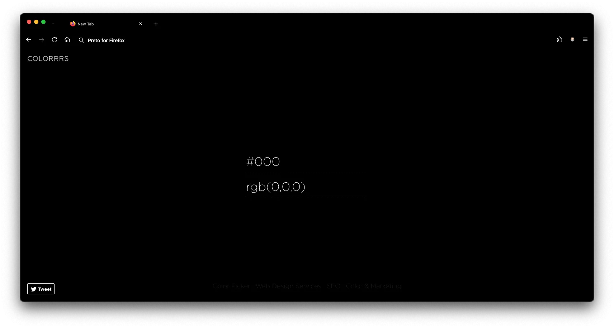 -
Firefox GNOME theme
Download →A bunch of CSS code to make Firefox look closer to GNOME's native apps. Compatibility: V91+
-
Cascade
Download →A responsive "One-Line" theme based on SimpleFox for the new ProtonUI. Compatibility: V91+
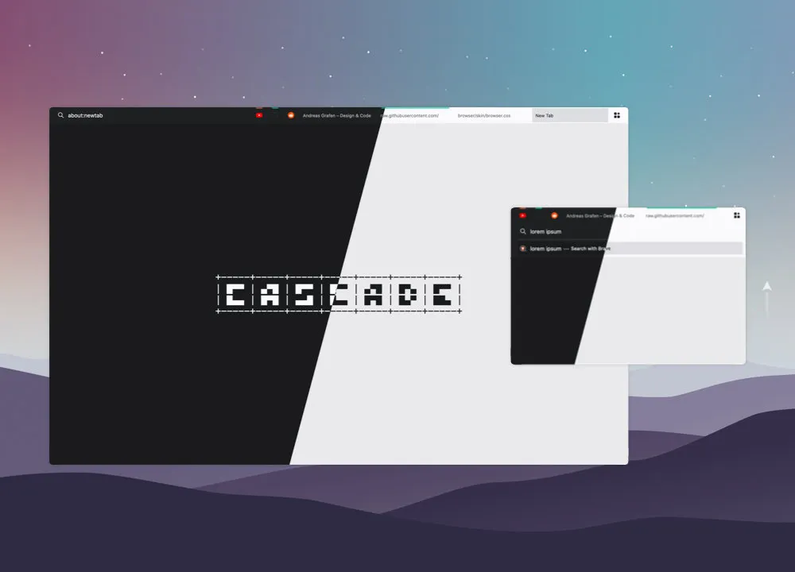 -
MacOSVibrant
Download →A theme that uses MacOS Vibrancy and is styled after other Apple Apps Compatibility: V91+
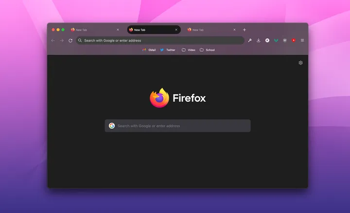 -
Natura for Firefox
Download →Nature theme for Firefox Compatibility: V91+
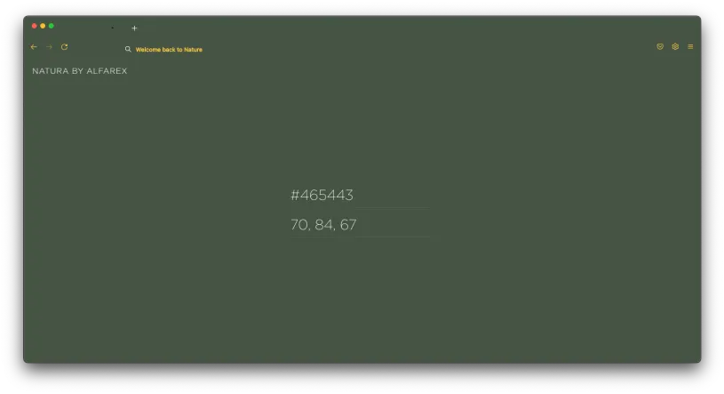 -
Proton Square
Download →Recreates the feel of Quantum with its squared tabs and menus. No rounded corners to be seen. Compatibility: V91+

-
GruvFox by Alfarex2019
Download →GruvFox is a remix of dpcdpc11's theme, featuring the gruvbox color palette. Compatibility: V91+

-
Firefox Compact Mode
Download →A compact mode that follows Firefox 89 (known as Proton) design system while using the same vertical space as the compact mode in Firefox 88 (known as Photon). Compatibility: V91+
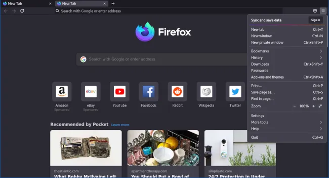 -
OnelineProton
Download →An oneline userChrome.css theme for Firefox, which aims to keep the Proton experience Compatibility: V89+

-
ProtoVibrant
Download →Add macOS vibrancy to the Proton titlebar. Supports dark and light mode. Compatibility: V89+
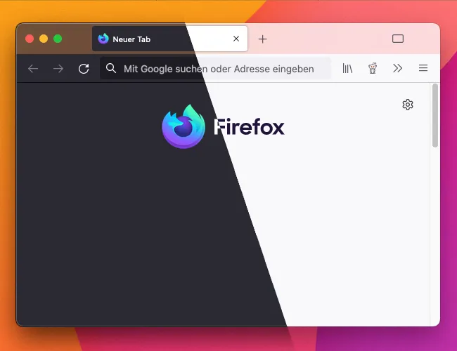 -
MartinFox
Download →Really simple userChrome.css to make the active tab stand out more; 61 lines. Compatibility: V89+

-
pro-fox: enhanced firefox proton
Download →a proton based theme to make it even better Compatibility: V89+
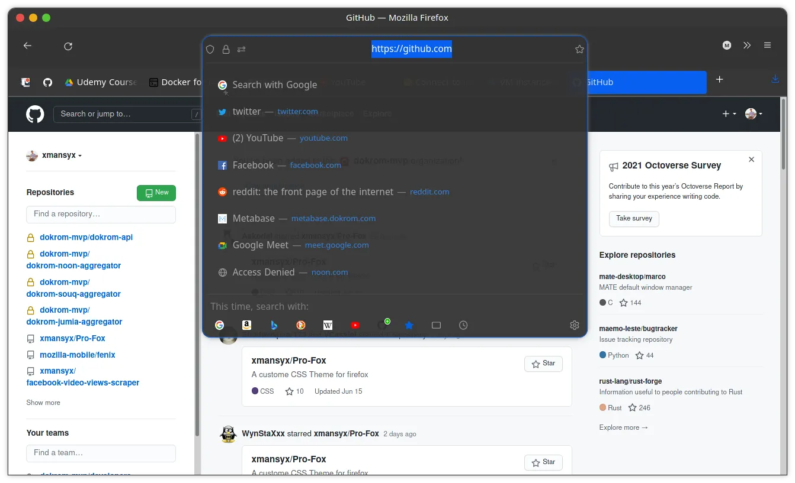 -
Chameleons-Beauty to Firefox CSS
Download →Adaptive Theme to Firefox Themes Compatibility: V89+

-
Technetium
Download →A focused approach to taming the new Firefox Proton interface, restituting some of the beloved elements retired alongside the old Photon UI - menu icons and much more Compatibility: V89+
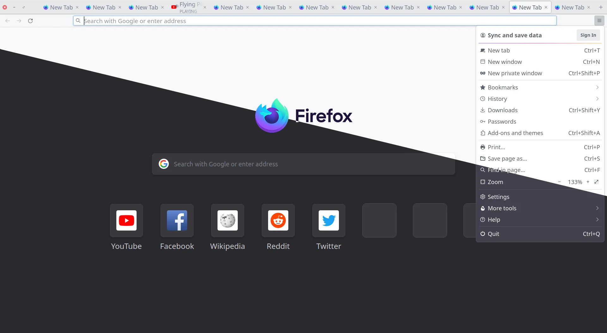 -
Gradient rounded tabs redesign and ultra compact mode [Proton UI]
Download →Firefox Proton UI minimal changes with nav-bar-connected rounded tabs, reduced compact mode, nightly color gradient accents etc.. Compatibility: V89+
![Gradient rounded tabs redesign and ultra compact mode [Proton UI]](./assets/proton-ui-gradient-rounded-tabs-display.9Q7hqyj7_ZaipYw.webp)
-
[Firefox 90+] RainFox
Download →Restores Photon's look and feel but keeps Proton's clarity with some improvements and new features. Compatibility: V89+
![[Firefox 90+] RainFox](./assets/rainfox.bU0l8OF-_Z1jBmpB.webp)
-
Lepton's Photon-Styled in Proton UI
Download →🦊 I tried to preserve Proton’s feeling while preserving Photon’s strengths. Icons, Padding, Tab Design... Compatibility: V89+
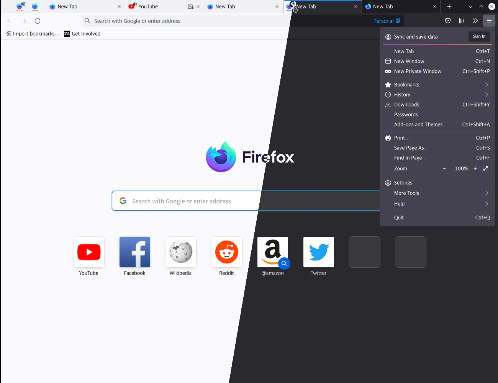 -
Lepton(Proton Fix) in Proton UI
Download →🦊 I respect proton UI and aim to fix it. Icons, Padding, Tab Design... Compatibility: V89+

-
Firefox vertical tabs (TST) UI
Download →Vertical tabs in Firefox using tree style tabs. Vibrant tab selectors, full dark mode, titlebar text in nav-bar and much more. Compatibility: V89+

-
Australis like tabs in Proton UI
Download →Changes to make the new proton UI redesign in Firefox better; including changes to tabs, more compact-compact mode, proton gradient accents in elements and much more Compatibility: V89+

-
DiamondFucsia Theme to Firefox Css
Download →Dark Theme to Firefox with Fuchsia Colors Compatibility: V89+

-
Compact Mode to Firefox Css
Download →Theme to Make Firefox Compact and keep it's Beauty Compatibility: V89+

-
duskFox
Download →A dark indigo theme integrated with extensive functional and visual scripts. Compatibility: V89+

-
Alpen Blue to Firefox CSS
Download →Theme to Blue and Alpenglow lovers Compatibility: V89+
-
WhiteSur Safari style for Firefox
Download →Make your Firefox look like Safari. MacOS Big Sur inspired theme for Firefox on MacOS & Windows. Compatibility: V89+
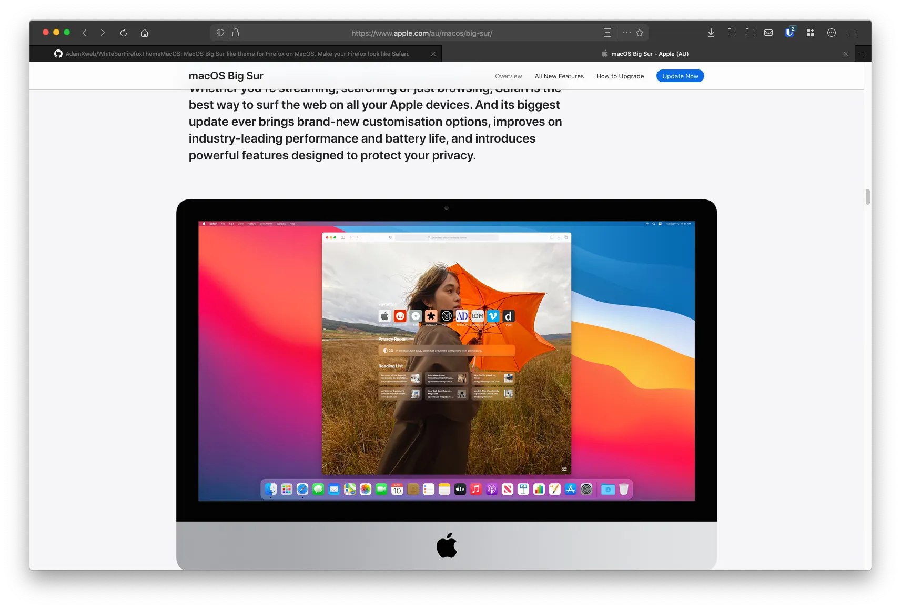 -
Pseudo-fullscreen Firefox, Sidebery and YouTube
Download →Compatibility: V89+
-
Firefox Halo
Download →A mininmalist Firefox theme with a lot of about: pages edited to act as resources. Updates about every month.

-
Moonlight 🌌
Download →A dark userstyle for Firefox inspired by moonlight-vscode-theme and github-moonlight
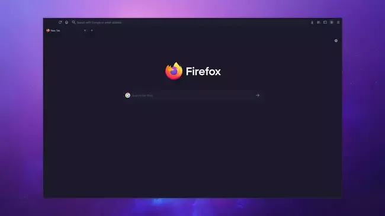 -
Elegant Nord Theme
Download →Elegant Nord Theme with material design

-
NicoFox
Download →A simple rounded theme
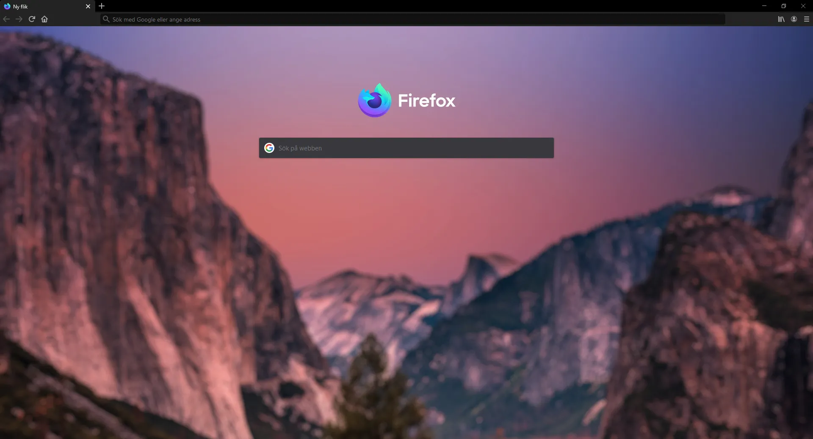 -
Edge-Frfox
Download →A Firefox userChrome.css theme that aims to recreate the look and feel of Microsoft Edge.
-
Firefox i3wm theme
Download →A theme for Firefox meant to emulate qutebrowser and integrate with the i3 window manager.
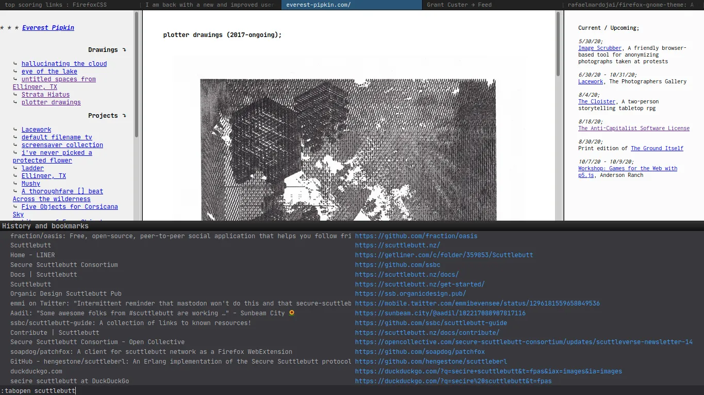 -
EdgeFox
Download →Is a userchrome that imitates (or attempts to imitate) the style of Microsoft's Edge Chromiun browser.

-
FirefoxW10ContextMenus
Download →Emulates the Windows 10 context menus in Firefox.

-
Flying Fox
Download →An opinionated set of configurations for firefox with Material Fox, github-moonlight userstyle
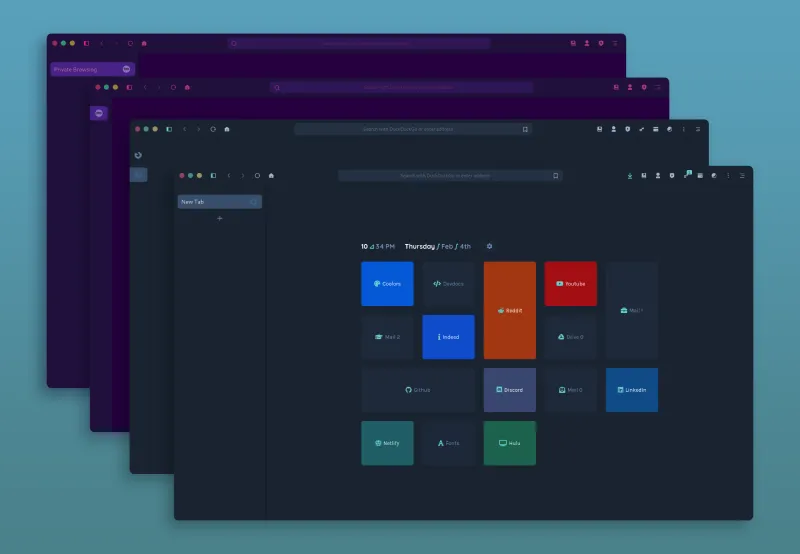 -
Monochrome Tree
Download →A custom minimalist theme for Firefox with Tree Style Tab support

-
Almost Dark Proton
Download →Based on Simplify Darkish with few small changes based too in Mod Blur theme. It is intended to be used together with the new firefox elements with the new design called Proton, as the new tab page design. Compatibility: V89+

-
Firefox UWP Style
Download →A theme that follows UWP styling. Featuring the original MDL2 design and Sun Valley refresh
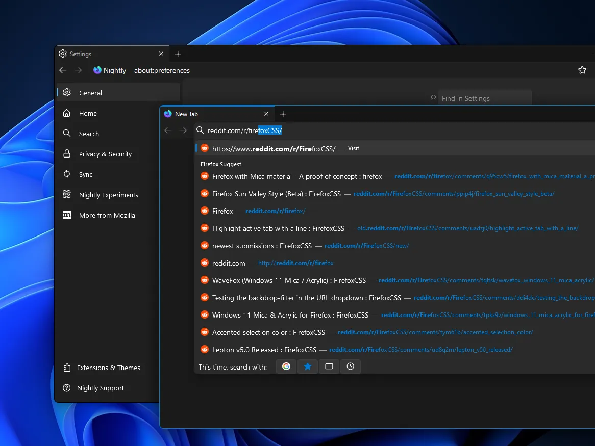 -
MaterialFox
Download →A Material Design-inspired userChrome.css theme for Firefox
-
minimal-functional-fox
Download →A minimal, yet functional configuration for Firefox!
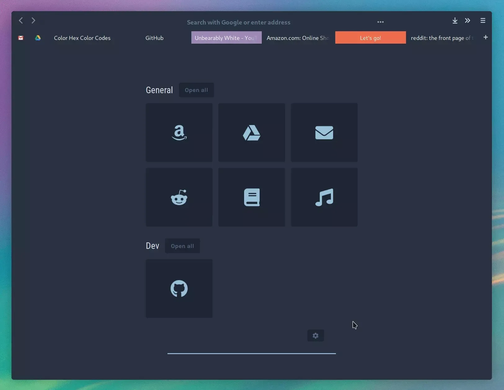 -
quietfox
Download →This userChrome mod was created to make the Firefox UI cleaner and more modern without sacrificing any of its original features. You can still use themes, and you can still use Compact Mode and Touch Mode. You can pretty much forget that you have a mod installed, it works quietly in the background.
-
Firefox-Mod-Blur
Download →Tested 84.0.1 Windows 10 / Default Dark Theme
-
not-holar's theme
Download →Welcome to the repo for my Firefox theme, a theme that aims to look nice and clean while not compromising functionality. Compatibility: V89+

-
nord-firefox
Download →Firefox userChrome.css theme, based on https://github.com/AnubisZ9/Global-Dark-Nordic-theme/.
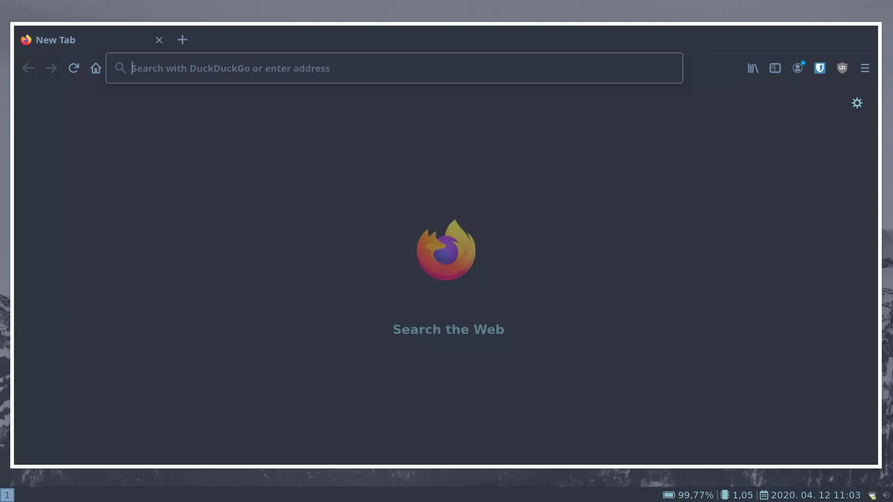 -
Firefox Review
Download →Firefox Review is a CSS redesign of the browser, changing the look of Firefox to match the color scheme and design language of Firefox Preview, the previous name of Mozilla's new mobile app.

-
blurredfox
Download →A modern Firefox CSS Theme

-
SimpleFox
Download →🦊 A Userstyle theme for Firefox minimalist and Keyboard centered.

-
Simplify Darkish for Firefox
Download →A minimal Firefox Theme for those who would like to properly enjoy my Simplify 10 Darkish - Windows 10 Themes Compatibility: V89+

-
Simplify Silver Peach for Firefox
Download →A minimal Firefox Theme for those who would like to properly enjoy my Simplify 10 Silver Peach - Windows 10 Themes Compatibility: V89+

-
FirefoxCss
Download →Custom userChrome.css for firefox based on Material Fox and Flying Fox with few small changes.

-
minimalFOX
Download →A compact & minimal Firefox theme built for macOS.
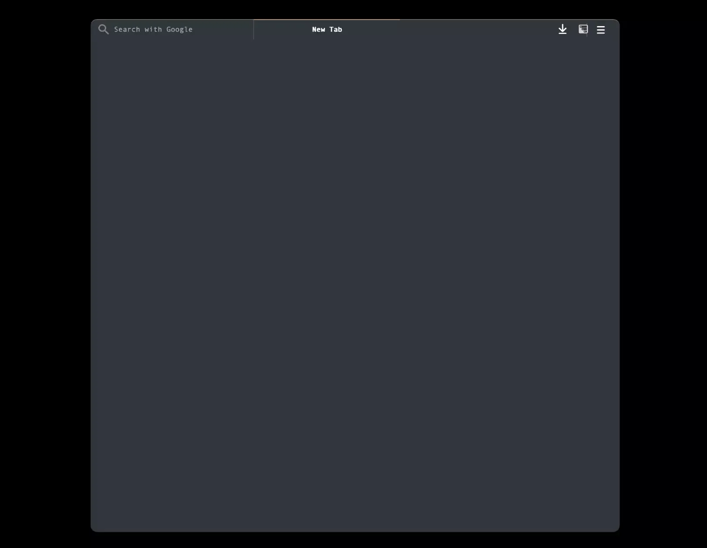 -
FirefoxCSS-Plus
Download →FirefoxCSS+ is based on h4wwk3ye release (https://github.com/h4wwk3ye/firefoxCSS), MaterialFox (https://github.com/muckSponge/MaterialFox) and FlyingFox (https://github.com/akshat46/FlyingFox).
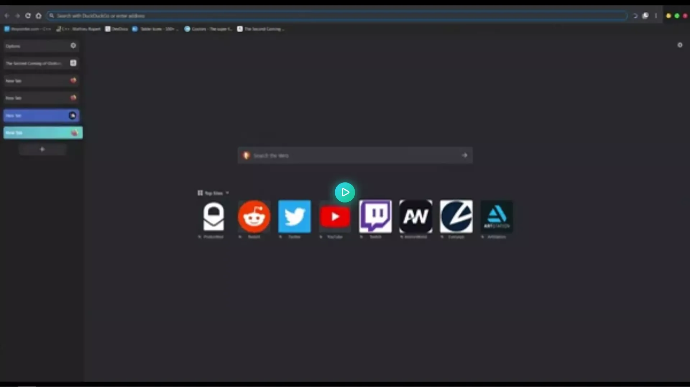 -
Sweet_Pop!
Download →Sweet_Pop! Minimalist oneliner theme for Firefox perfectly matching Sweet Dark.

-
u/FffDtark's Theme
Download →Oneline theme